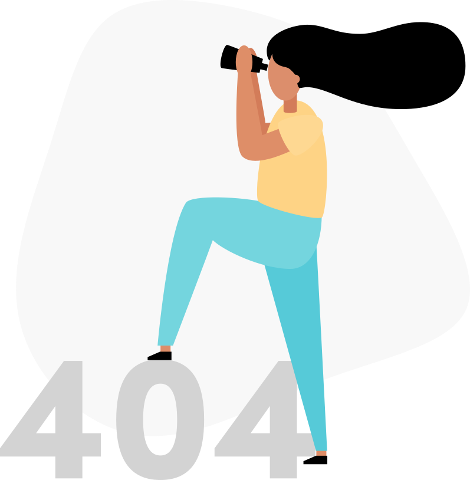

Crea Tec HUB · Erro 404
Este espaço não está disponível.
A página pode ter sido movida ou o endereço está incorreto. Volte ao painel e encontre o espaço certo para o seu próximo projeto.
Voltar ao painel
A página pode ter sido movida ou o endereço está incorreto. Volte ao painel e encontre o espaço certo para o seu próximo projeto.
Voltar ao painel